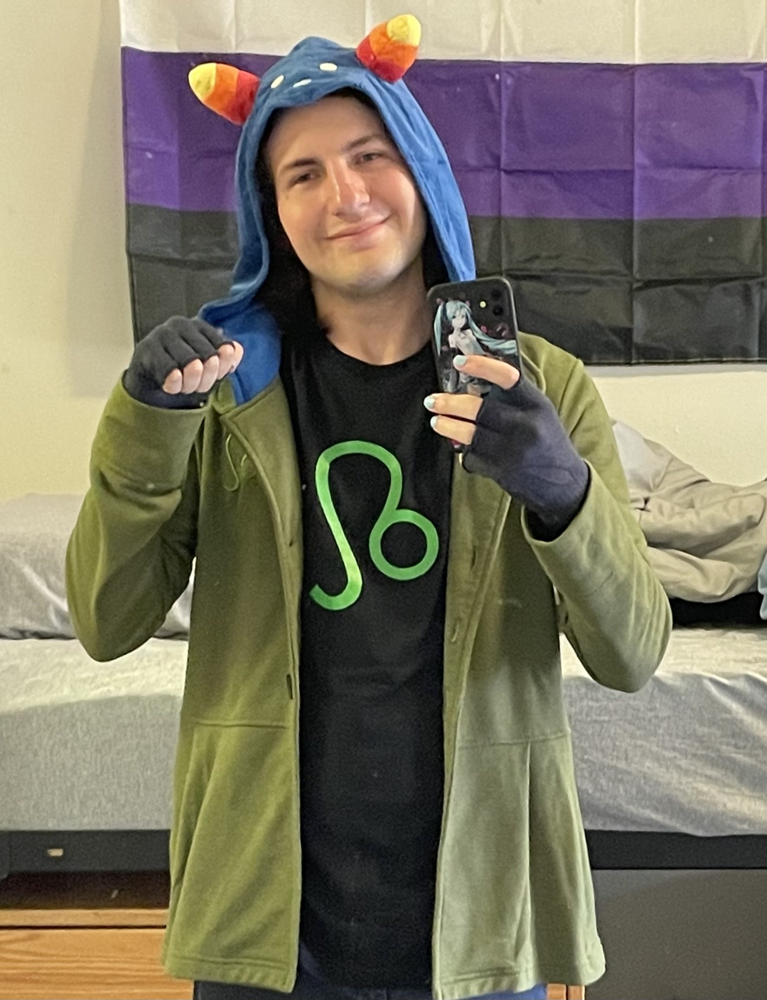
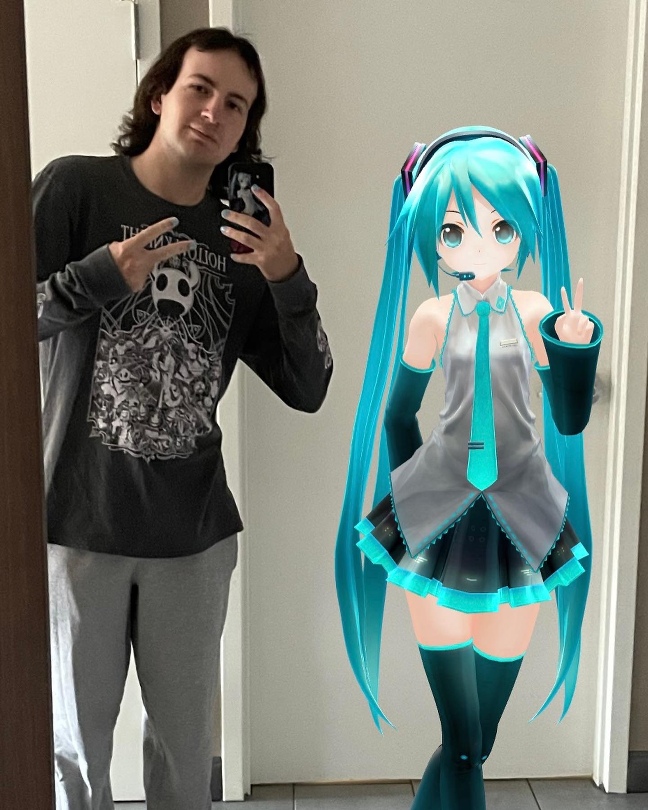
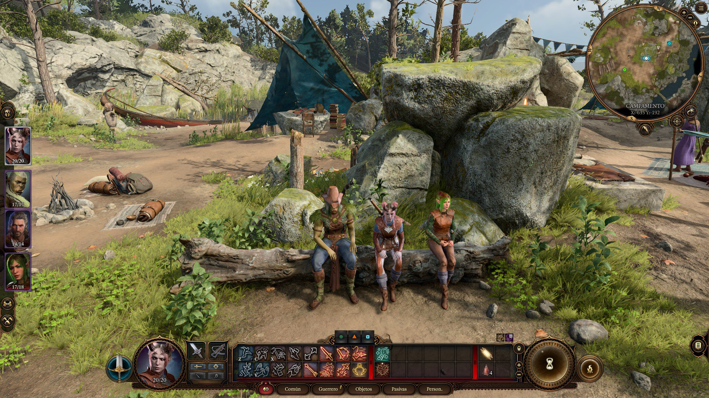

I am Nix
(they/them)
I'm interested in video games
Who am I?
I am an undergraduate sophomore at the University of Pittsburgh School of Computing and Information. Right now, the classes I am taking this semester that I am most looking forward to are Social Implications of Computing Technology, Intro to Creative Writing, Queer/Transgender Literature, and of course Usability Testing in Technical Writing. My major is DNID (Digital Narrative and Interactive Design) with a focus on game design, and I am planning on minoring in GSWS (Gender, Sexuality, and Women's Studies). Originally, I applied to Pitt with the expectation of majoring in Computer Science and had no idea what I would minor in, but through my freshman year, I became a lot more in-tune with what specifically I am interested in and I believe I have settled where I belong.
Where I come from
Outside of Pitt, I come from Bucks County, Pennsylvania where I live with my amazing parents and older sister. My family has always been extremely supportive of me and my interests, and I am grateful to them for encouraging me to pursue what makes me happy. A huge inspiration for me learning programming and getting into computers was my late grandfather, who was skilled in computer science and I greatly looked up to him growing up.

Why video games?
For most of my life, I have been obsessed with video games. Video games are an art to me and I am extremely passionate about the creativity and work involved in their creation. Over the years, I have played so many different games of a variety of genres, learning to appreciate the work and design of all games even if they aren't to my tastes. (For the curious, some of my favorite games include Outer Wilds, Mother 3, Sekiro, Terraria, Hollow Knight, and Baldur's Gate 3). In high school, I got to make a few small, simple games as projects which was fun. More recently, I have been designing and DMing a Dungeons & Dragons campaign for my friends, and this experience has only further solidified my interest in game design.

Where do you want your knowledge and skills to take you?
As might be obvious by now, my dream job is to be a game designer. It is something I am aware will be difficult because of how competitive it can be, but I am pretty confident I can make it there some day. Originally, I was more focused on the programming aspect of game development, but when I stopped to think about why games are so special to me and why I want to help create them, I realized I belong more on the creative side of things. That is also ultimately why I switched my major from Computer Science to DNID. Working with games has been a dream of mine since childhood, and it is not something I plan on letting go of. Video games have helped bring me joy in some of my lowest moments, and overall, have genuinely changed my life. The idea of helping to create an experience that could do the same for others means the world to me.

Me and some friends playing Baldur's Gate 3 together. I am the green Half-Orc Druid.

Why make a spark when you can light a fire?